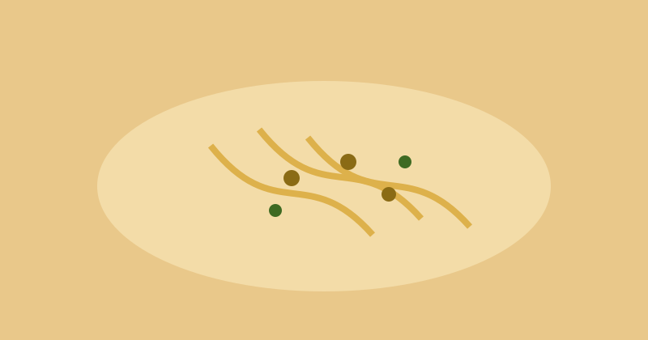
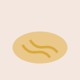

Kochen

Beschreibung
Ein klassisches italienisches Rezept mit cremiger Eier-Parmesan-Sauce und knusprig ausgebratenem Speck. Schnell zubereitet und ideal für ein herzhaftes Abendessen.
Zutaten
- 200 g Spaghetti
- 100 g Speck
- 2 Eier
- 50 g Parmesan
- Salz und Pfeffer
Zubereitung
-
Wasser salzen und Spaghetti bissfest kochen.
-
Speck in einer Pfanne knusprig anbraten.
-
Eier mit Parmesan verrühren, mit Pasta und Speck vermengen und sofort servieren.
